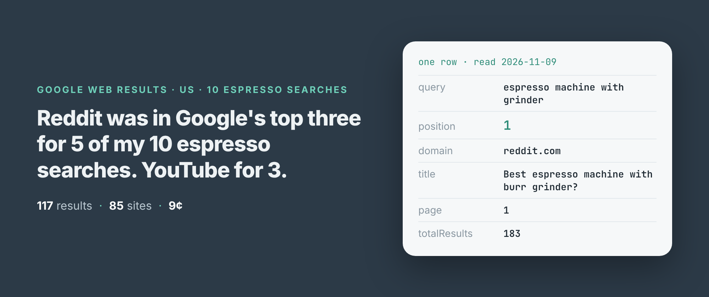
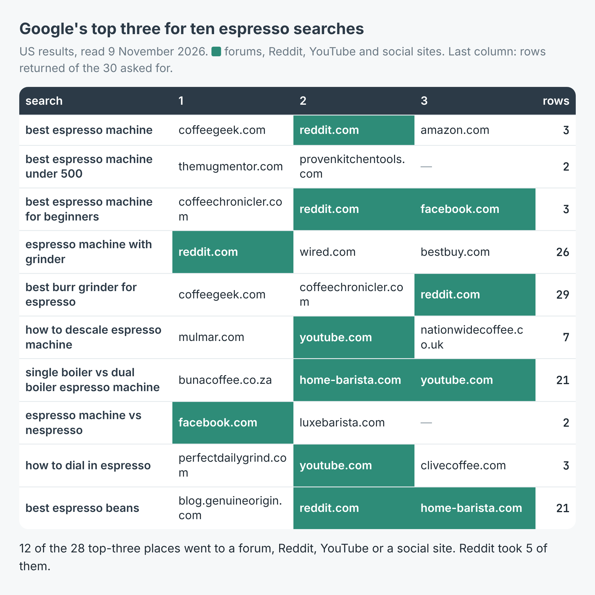
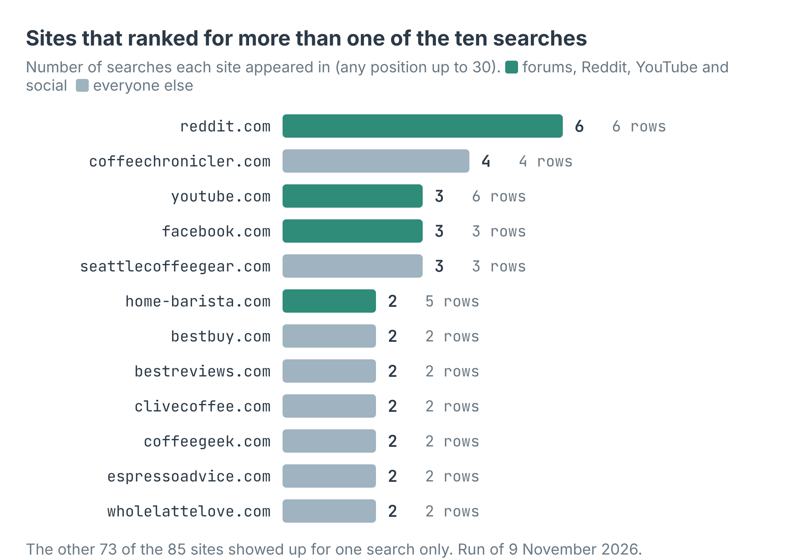
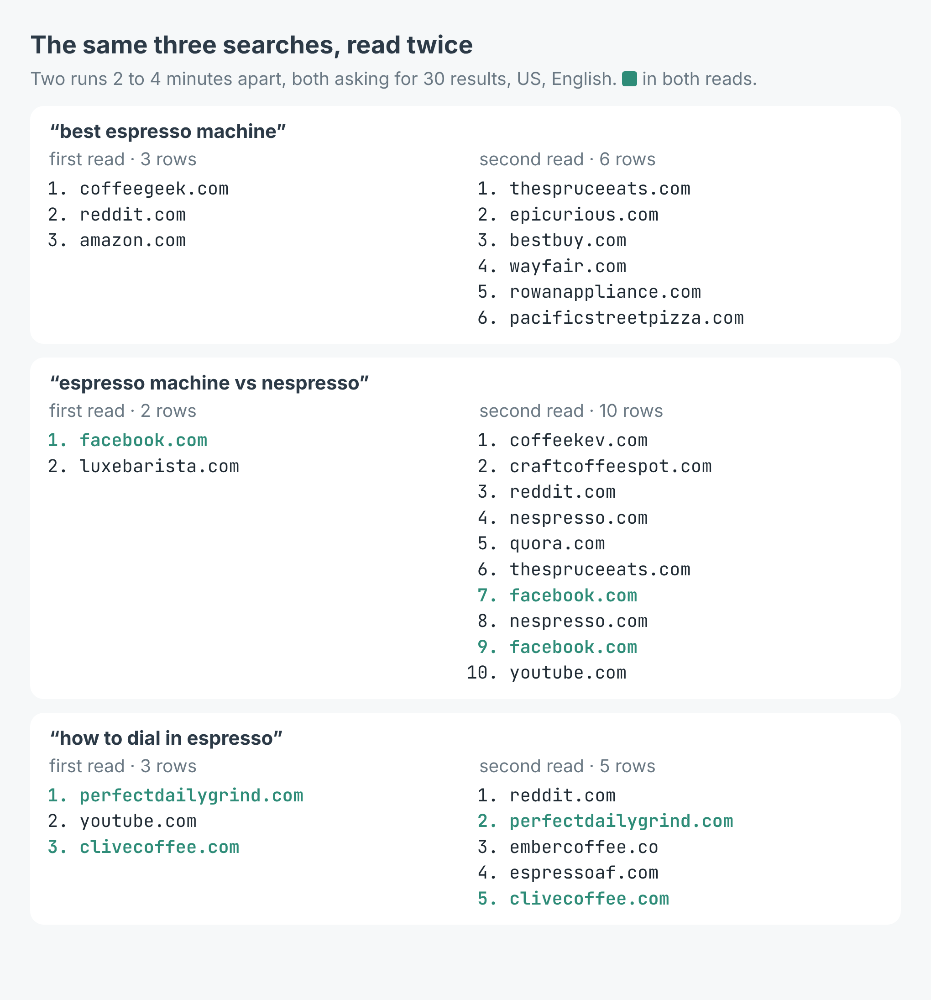

How to see which websites rank on Google for a list of keywords (10 espresso searches, 117 results)
I wrote this with an AI assistant. The runs, numbers and code are real, and I checked them.

Who does Google send you to when you type "best burr grinder for espresso"? A coffee magazine, a roaster, a shop? I asked it ten espresso questions this morning and wrote down every site it listed.
Reddit was in the top three for five of them. YouTube for three. Of the 28 top-three places I got back, 12 went to Reddit, YouTube, Facebook, Instagram or a coffee forum. If you sell espresso gear or write about it, that's who you're up against, and it isn't mostly other shops.
Ten searches, one run
I build and run a Google search scraper on Apify. You give it searches the way you'd type them, and each result comes back as a row: position, page, domain, link, title, snippet, and a date when Google printed one in the snippet. There's no API key and no browser. Web pages are read through Apify's Google SERP proxy.
I gave it ten searches a person shopping for a home espresso setup might type, from "best espresso machine" to "how to descale espresso machine", US results in English, 30 results each:
import { ApifyClient } from 'apify-client';
const client = new ApifyClient({ token: process.env.APIFY_TOKEN });
const run = await client.actor('simple.actor/google-search').call({
queries: ['best espresso machine', 'best espresso beans'],
maxItems: 30, country: 'US', language: 'en-US',
});
const { items } = await client.dataset(run.defaultDatasetId)
.listItems();
for (const r of items) {
if (r.type === 'result') console.log(r.position, r.domain);
}
The real run had all ten searches in queries. It took 3 minutes 30 seconds and returned 117 results from 85 different sites, with no error rows.

The top three for each search. Green is Reddit, YouTube, Facebook, Instagram, Quora or a forum.
Reddit was first for "espresso machine with grinder", second for "best espresso machine", "best espresso machine for beginners" and "best espresso beans", and third for "best burr grinder for espresso". For the how-to searches it was video: YouTube was second for "how to descale espresso machine" and "how to dial in espresso", and had three of the seven results for descaling.
Who shows up everywhere
Position one is the obvious thing to look at. Reach across the whole list is the other. Of the 85 sites, 73 appeared for one search only. Twelve made it into two or more.

Reddit ranked for 6 of the 10 searches. The best a single coffee site managed was 4.
That coffee site was coffeechronicler.com, a review blog, first for "best espresso machine for beginners" and second for "best burr grinder for espresso". Seattle Coffee Gear was the only shop on three searches. Amazon appeared once, at third for "best espresso machine".
The snippets carry dates more often than I expected: 66 of the 117 results had one, and the scraper turns it into date and timestamp. 30 of the 66 were from 2026. But age doesn't keep a page off the top. Google's first result for "best espresso machine" was an article dated 7 April 2024. Second for "single boiler vs dual boiler espresso machine" was a home-barista.com forum thread from 5 November 2011.
What it cost
The scraper charges $0.005 for each page of Google results it reads, about ten results a page, plus $0.00005 when a run starts. This run read 18 pages, so a caller would pay 18 × $0.005 + $0.00005 = $0.09005, about 9 cents for ten searches. A search that can't be read is never charged.
If you only care about the first page, set maxItems to 10 and each search is one page: $0.005 a keyword, or $5 for a thousand keywords in one run.
Read it twice before you believe a ranking
Not every search went 30 deep. Four came back with 21 to 29 results over three pages. The other six stopped after one page, with 2 to 7 rows each: "best espresso machine" gave me 3, "espresso machine vs nespresso" 2. Each of those was charged as one page. The rows don't say why a page held so few, and I can't tell you more than that.
So a few minutes later I read three of the thin ones again.

Two reads of the same search, minutes apart. For "best espresso machine" not one site was in both.
"best espresso machine" came back with 6 rows instead of 3, and not one site was the same: The Spruce Eats, Epicurious, Best Buy and Wayfair instead of CoffeeGeek, Reddit and Amazon. "espresso machine vs nespresso" went from 2 rows to 10. Only "how to dial in espresso" mostly held, with Perfect Daily Grind and Clive Coffee in both reads.
That's the thing to know if you track rankings. One read of Google is one answer from one moment, and for some searches it moves a lot. Read each keyword more than once, on different days, and treat a site's position as a range.
One field I'd leave alone. totalResults is Google's own "About N results" figure, and here it read 933 for "best espresso machine" and 45 for "how to descale espresso machine". Neither is anywhere near the number of pages on those subjects, so I wouldn't use it to size a keyword.
Make it your own keywords
The example repo, google-keyword-rank-checker, takes a file of keywords and, if you give it one, your domain. It prints each keyword's top three, where your site ranks or that it doesn't, and the sites that show up across most of your list, and writes every row to results.csv, in Node and in Python. Swap my espresso searches for the ones your customers type: "emergency plumber Leeds", "best running shoes for flat feet", your product next to a rival's. Keep maxItems at 10 for a first-page check, run it on more than one day, and count Reddit and YouTube as competitors. The scraper is at apify.com/simple.actor/google-search.